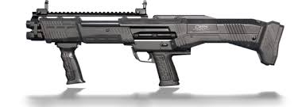

- DBS is a strong shotgun in Battlegrounds Mobile India.
- It uses 12-gauge ammunition and has two barrels, allowing for two continuous rounds before needing to reload.
- Each shot causes tremendous damage, making it lethal at close range. However, its potency decreases with distance.

- The Saiga-12K (referred to as the S12K in-game) is a shotgun in BATTLEGROUNDS.
- A semi-automatic, magazine fed 12-gauge shotgun, it is able to lay down an obscene amount of damage over a wide area since it doesn't need to be manually cycled between shots.
- The UMP45 is a submachine gun type weapon in BATTLEGROUNDS.
- The UMP, short for Universal Machine pistol, is a submachine gun designed by Heckler & Koch.
- The UMP is the succes
- In BGMI the UZI is a SubMachine Gun (SMG) and uses 9mm ammunition.
- The stats for UZI are great such as its fire rate and reload time but it falls behind in terms of damage compared to other weapons.
- Battlegrounds Mobile India (BGMI) offers a good variety of Sub Machine Guns (SMG) in the game.
- 1.Damage: The P90 delivers a respectable 30 points of damage, making it a formidable choice for close to mid-range combat.
- Rate of Fire: With a rapid fire rate of 70, the P90 can lay down a barrage of bullets in a matter of seconds.